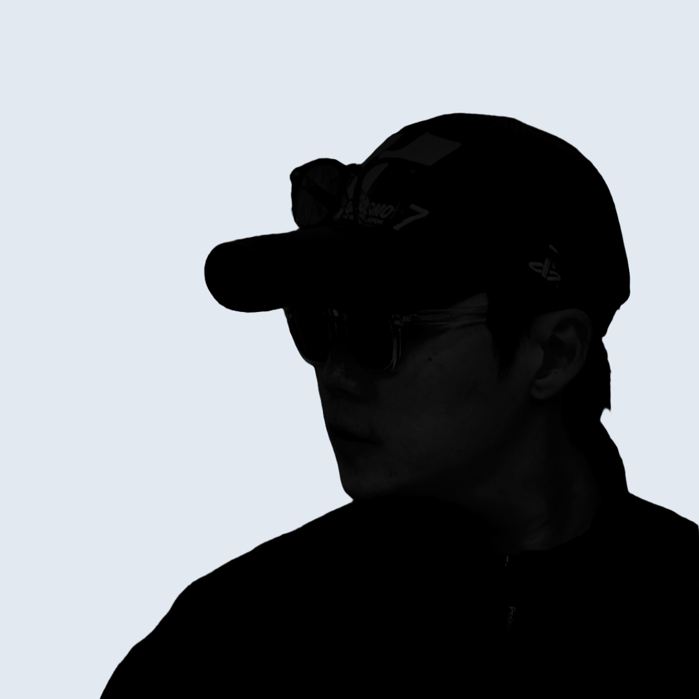

FIFA Football Medicine Diploma 한의사 최초수료
20년 축구 현장 운영 스페셜리스트

전 카카오 · 리디 · 지그재그
"실력이 부족해서가 아닙니다. 관리의 기준이 없었기 때문입니다."
성장 속도의 차이
생년월일이 같더라도, 신체 나이(Bone Age)는 다릅니다. 성장 속도에 따른 상대적 과부하는 단순한 실력 차이로 오인되며 평가의 편향으로 이어집니다.
부상 딜레마
잔부상의 50%는 PHV(성장급증기) 전후부터 시작됩니다. 여기에 자율신경 불균형, OTS, RED-S가 더해지면 선수 생명은 돌이킬 수 없이 위협받습니다.
심리적 장벽
재능은 있지만 시합 불안, 훈련 태도, 압박 대처 능력이 부족해 무너지는 아이들이 많습니다. 강한 멘탈은 프로와 대표선수들의 가장 핵심적인 요소입니다.
MPS는 선수 개인과 팀 지도자 모두에게 최적화된 앱과 대시보드를 제공합니다.
지도자 및 팀 매니지먼트
선수 및 학부모
IT 플랫폼과 의료기관을 분리하여, 전문적인 스포츠한의학 검진 데이터가 팀 훈련 지표로 변환됩니다.
MPS 협약을 맺은 전문 스포츠의학/한의학 센터에 선수 또는 팀 단위로 방문합니다.
초음파 골연령(골도법) 검사, 체성분, 심리 상태 등 안전한 비침습적 검사를 진행합니다.
검사 결과를 비식별화하여 PlayMetrics 플랫폼으로 안전하게 전송, 스포츠 지표로 변환합니다.
팀과 학부모는 SaaS 형태의 대시보드를 구독하여 실시간 성장 리포트를 확인합니다.
제휴 기관의 검진 데이터를 기반으로 선수의 현재와 미래를 시각화합니다. 항목을 클릭하여 데모를 확인하세요.
도입 기준: 1팀 (선수 20~30명 규모)
플랫폼 이용료 기준이며, 제휴 병원 검진 비용은 별도입니다. (의료법 준수)
1주기(처음 + 대회 전후) 상태 점검
본격적인 성장 및 부상 리스크 관리 SaaS
프로산하 유스 수준의 밀착 데이터 관리
현역 프로선수부터 지도자, 학부모까지. MPS가 만들어낸 진짜 변화를 확인하세요.
해온한의원에서 받았던 MPS 스포츠평가는 믿을 수 있다고 생각합니다. 선수 성장을 정말로 돕고 싶은 팀, 나이에 맞는 훈련을 제공하는 팀에게 필수적입니다.
이전에는 선수의 피로도와 한계를 감독의 경험에 의존했습니다. MPS 도입 후 부상 위험도(OTS)에 따라 로테이션을 돌리니 장기 부상자가 눈에 띄게 줄었습니다.
아이의 성장 속도를 몰라 막연히 불안했습니다. 생물학적 나이에 맞춘 경로를 데이터로 확인하고 나니, 장기적인 관점에서 아이를 응원하게 되었습니다.
생년월일이 같아도 발달은 천차만별입니다. PHV 데이터를 통해 무리한 과부하 없이 잠재력을 끌어올리는 체계적인 훈련 관리가 가능해졌습니다.
잦은 부상으로 고생하던 아이가 위험도 관리를 받으며 컨디션이 좋아졌습니다. 객관적인 데이터로 훈련 강도를 설명해 주시니 마음이 든든합니다.
직감이 아닌 전문적인 데이터 리포트를 보여드리며 상담합니다. 객관적 피드백을 제공하니 팀 운영에 대한 학부모님들의 깊은 신뢰가 쌓였습니다.
플랫폼 구독 시, 실제 검사는 법적으로 자격을 갖춘 전문 의료기관에서 안전하게 진행됩니다.
"18년 이상의 스포츠 진료 노하우. 비침습적 초음파 장비와 체계화된 설문을 통해 유소년 선수의 상태를 검진합니다. 검진 결과는 PlayMetrics 플랫폼을 통해 안전하게 연동됩니다."
"경기 남부권 유소년 팀을 위한 최적의 접근성. 신도림 본점과 동일한 수준의 정밀 주기 검진 시스템을 제공합니다. 부상 방지와 성장 잠재력 확인에 집중합니다."
팀 매니지먼트를 혁신할 MPS PlayMetrics 도입을 원하신다면
아래 버튼을 눌러 상담을 신청해 주세요.